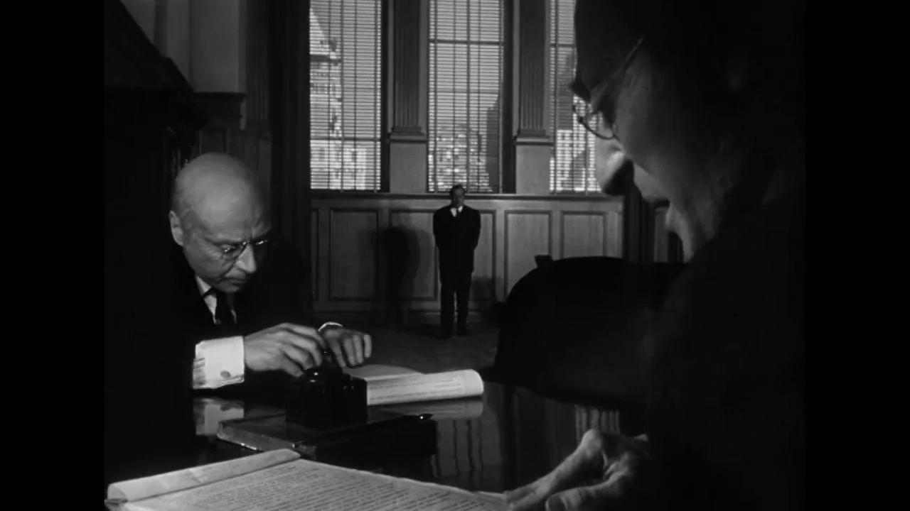
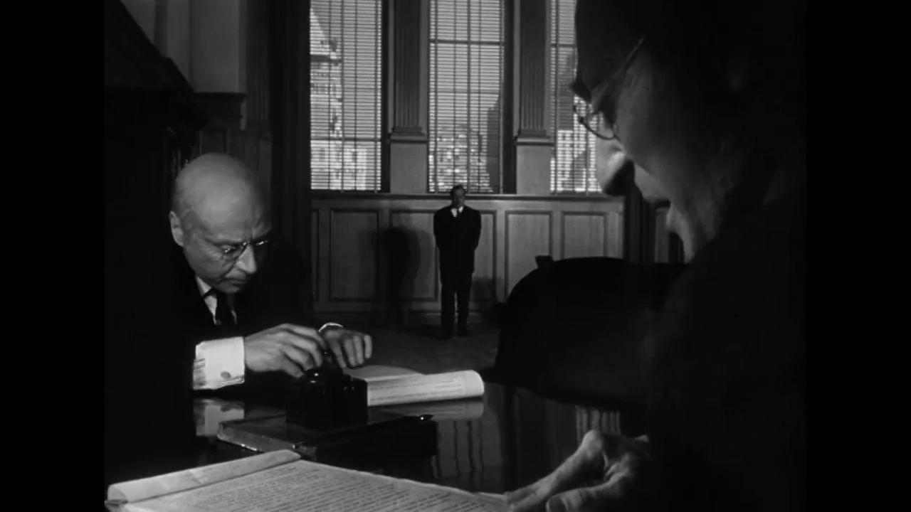

What is Deep Focus?
Deep focus is a cinematographic technique in which the foreground, middle ground, and background of a shot are all kept in sharp focus. Unlike shallow focus, where only one plane is in focus to direct the viewer's attention, deep focus allows for complex compositions and layered visual storytelling. This means multiple actions and meanings can coexist in one uninterrupted frame, letting the viewer decide where to look and what to interpret.
The technique fosters a more participatory viewer experience, encouraging attention to detail and subtext. It’s often used to emphasize power dynamics, emotional distances, or the passage of time—all within a single shot. Directors rely on deep focus not only to show more but to suggest more, creating frames that mirror reality’s complexity. This makes it one of the most philosophically rich tools in visual storytelling.
 

Gregg Toland's Vision
Gregg Toland was more than a cinematographer—he was a technical visionary. When working with Orson Welles, he pursued an unprecedented goal: give every plane of the frame equal narrative weight. This ambition required rethinking not just lens choice, but lighting strategy, set construction, and camera technology. Toland's use of coated lenses, high-wattage arc lights, and fast film stock all contributed to achieving deep focus with remarkable clarity.
One of Toland’s most critical insights was understanding how focus could influence power. By placing emotionally or thematically rich elements deep in the background, he disrupted traditional visual hierarchies. Toland wasn’t simply highlighting what was important—he let the audience discover meaning for themselves. This hands-off approach to emphasis has since inspired generations of filmmakers.
Key Scene Analysis
Childhood Contract Scene
This scene is a masterclass in emotional tension and symbolic framing. While Kane plays outside in the snow, seen clearly through the window, his parents and a banker inside determine his future. The deep focus here juxtaposes innocence with adult control, visualizing Kane’s physical and emotional separation from his fate. It’s both poetic and harrowing.
Breakfast Montage
Welles and Toland condense years of a crumbling relationship into a single location with consistent deep focus framing. Across several cuts, we watch Kane and his wife drift further apart, emotionally and physically. The static camera captures their silent discomfort, and the depth of field keeps the cold space between them ever-present.
Political Rally
As Kane delivers a fiery political speech, the deep focus setup lets us see the crowd and a massive poster of Kane looming behind him. This duality of presence—Kane in the flesh and Kane as icon—serves as a metaphor for his ego and desire for control. The background isn’t just filler; it’s commentary.
Technical Innovation
Toland worked with lens makers on optics that stayed sharp from foreground to distance. Powerful arc lights and careful exposure let him shoot at small apertures—around f/8 to f/16—while keeping the image clear.
He also adopted Kodak’s Super XX stock, which handled low-light scenes better than earlier film. Together, these choices turned deep-focus photography into a practical, everyday tool rather than a special-occasion effect.
Set Design & Cinematic Space
Citizen Kane’s sets weren’t typical Hollywood backdrops. Toland and the production team designed rooms with real ceilings (uncommon at the time) and camera pits to allow for extreme low angles. Movable walls enabled flexible blocking, helping Welles direct dynamic performances within static frames.
This spatial realism reinforced the film’s themes: confinement, surveillance, and societal pressure. The architecture of each room played a psychological role, and deep focus ensured the audience saw—and felt—all of it. Kane’s home, his office, and even Susan’s stage are all portrayed with symbolic scale and tension, using space as storytelling.
Legacy in Modern Film
Citizen Kane’s influence is visible in the works of directors like Stanley Kubrick, Paul Thomas Anderson, and Alfonso Cuarón. From the long takes in Children of Men to the layered blocking of Magnolia, the fingerprint of deep focus is everywhere. It shifted cinema’s visual grammar, encouraging complexity over simplicity, subtlety over exposition.
Modern digital cameras make deep focus easier to achieve, but the spirit of Toland’s technique—empowering the audience to interpret—remains rare. When used thoughtfully, deep focus becomes more than a technical feat; it becomes a lens through which to explore themes like memory, morality, and the human condition.
Reflection
This film made me appreciate the range of shots cinematographers capture and how those choices shape my sense of the story. By paying closer attention to background action, camera height, and depth of field, I gained a clearer view of the film’s ideas and subtext. Details that once felt decorative now read as quiet signals about power, isolation, or shifting relationships.
I also saw how technical decisions—lens type, lighting levels, film stock, even ceiling height on a set—work together before any artistic effect reaches the screen. Gregg Toland’s problem-solving shows that strong visuals come from practical planning as much as creative vision. Keeping that lesson in mind will help me judge other films more thoughtfully and remind me, when I’m working on my own projects, to let technical choices serve the story rather than distract from it.
Bibliography
- Citizen Kane. Directed by Orson Welles, RKO, 1941.
- Bordwell, David, and Kristin Thompson. Film Art: An Introduction. McGraw-Hill, 2019.
- LoBrutto, Vincent. Principal Photography: Interviews with Cinematographers. Praeger, 1999.
- “Deep Focus.” Encyclopedia Britannica, www.britannica.com.
- Ebert, Roger. “Citizen Kane Review.” RogerEbert.com, 1998.